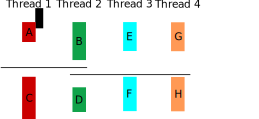

20 - Questões de revisão
Parte 1
Com base no código em parte1.c, responda.
Exercise 1
Answer
Contando com o processo original, serão criados quatro processos ao todo!
Exercise 2
Exercise 3
Parte 2
A figura sincronizacao.svg mostra uma situação com 4 threads em que existem dependências entre as partes de cada thread.

Faça as tarefas abaixo no programa parte2.c.
Example
Lance as threads no main.
Example
Use semáforos para criar as situações de sincronização na figura.
Exercise 4
Parte 3
Ler um arquivo linha a linha é uma operação comum em programas e é feito de maneira bastante prática em Python usando a função readlines.
Example
Crie uma função char *proxima_linha(int fd) que retorna uma string contendo a próxima linha do arquivo apontado por fd. Ao chegar no fim do arquivo a função passa a retornar NULL.
Danger
- neste exercício você não pode usar a função
getline. - preencha sua função no arquivo esqueleto.c
Rubrica
- 50% o exercício foi feito levando em conta um tamanho máximo de linha
- 100% linhas de tamanho arbitrário podem ser lidas.
Example
Faça agora uma função main que usa sua função acima para ler todas as linhas de um arquivo passado como argumento de linha de comando e mostrar somente as que iniciam com uma letra maiúscula. Você não precisa fazer a rubrica "completa" para fazer este item.
Parte 4
Para completar a revisão, desenvolva soluções para um simulado de prova!
Clique Aqui! e faça o download do arquivo simulado_sishard.zip. Desenvolva a prova e aproveite para tirar qualquer dúvida com os professores!
Atenção
Perceba no simulado de prova que o README.md ou README.html contém todos os detalhes para resolução das questões, incluindo critérios de avaliação.